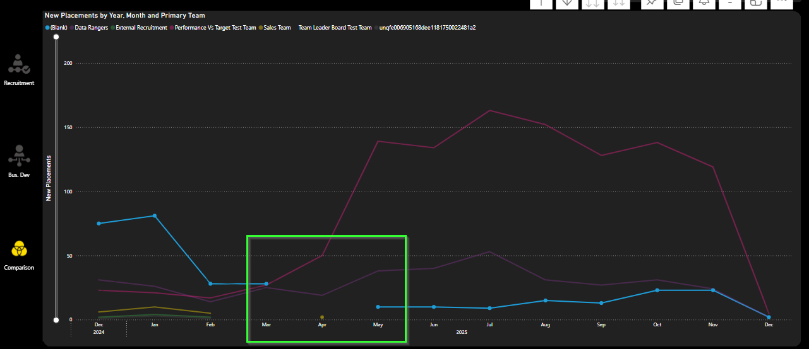
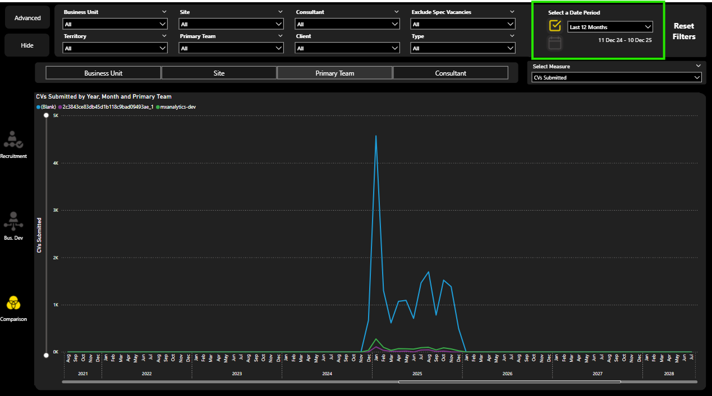
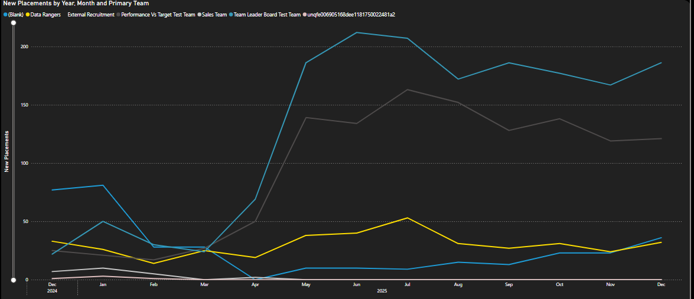

Context
In our Power BI report suite, one of our reports had a line chart plotting user-selected measure over months. We received customer feedback stating that it can be difficult to understand where no data exists for part of the period in question. The current behaviour is that the line breaks and re-starts the following month. The customer asked whether the line could drop to zero instead rather than disappear.

Below is a write up of the investigation carried out:
Objective
The objective of this spike was to determine how to display continuous time series (including zero values for missing data) without breaking existing date filter behaviour.
The challenge was to achieve this without altering existing measures or breaking report-wide filter behaviour.
Background
The line chart in question is actually flexible in design:
- It is driven by the normal slicers in the filter pane that all reports in the suite have.
- It is also driven by a hierarchy slicer which allows the user to view by Consultant, by Team, by Site or by Business Unit.
- It is also dependent on a field parameter which is materialised in the UI as a dropdown for the user to select one out of a total of 12 different measures to view on the line chart.
A customer provided feedback on this comparison page main visual:
"Chart is not easy to understand at a glance because where no data exists for any consultant for example, the line representing that person breaks and then starts again the following month - could it drop to zero instead?"
We attempted to add 0 to blanks so that the line chart wouldn't have breaks in each line where no data was available.
However when we did this for any measures in the dropdown, all dates outside the selected range appeared in the x-axis and the date period selector was essentially being ignored with the visual showing years & years of data.

So how could we meet the customers request?
Outcome
A working solution has been identified using DAX.
Root Cause
The cause of the issue was the way that the measure being plotted interacts with the date filter context.
By replacing BLANK() with 0 directly in the measure, the visual no longer treats missing data as absent. This causes Power BI to materialise all dates from the date table, effectively bypassing the intended slicer-driven filter behaviour and displaying the full date range.
Solution
Instead of altering the source measures, we use a so-called control flow measure and plot this in the visual. A control flow measure controls what calculation is performed downstream by determining the user selection in the UI and then running the correct measure based on this selection.
This measure evaluates the metric chosen by the user for every date value in DimDate. It also checks if the current data point falls within the user's selected period (as given by the date slicer) and returns one of three outcomes:
- blank for out of range dates.
- the measure value where it is non-blank or
- zero where it evaluates to blank.
This preserves all existing filter relationships and slicer functionality.
The detail of the measure is included below under 'Technical Note'.

The resultant visual improves readability and reduces confusion and ambiguity for end users.
Implementation Effort
The effort required is low. It solely requires creating a new measure in the semantic model and updating the y axis to plot this new measure.
The change would be isolated to this visual only so there is no danger of anything else breaking in the report suite.
Recommendation
Proceed with implementing the change as described.
Technical Note
A possible DAX measure that I think will achieve the requirements is below. The key technical points are:
- By using an ordinal to match, we don't need to worry about the names of the measures in the dropdown changing. It will still work (unless the order of the measures in the dropdown changes or measures are added to or removed from the existing 12)
- Using ALLSELECTED means we get the period selected by the date slicer and we completely ignore the dates on the visual
- We then compare this period with every date and only plot something when the dates overlap
- And what we plot is the measure value or 0, if it evaluates to blank.
-- obtain the number from the order column of the field parameter table (this identifies which measure the user has selected)
VAR _selectedMeasureOrdinal = SELECTEDVALUE( 'Activity Comparison'[Activity Comparison Order] )
-- evaluate the relevant measure calculation
VAR _measureCalculation =
SWITCH(
_selectedMeasureOrdinal,
0, [Vacancy Positions Sum],
1, [Shortlist Submit Count],
2, [Shortlist Interview Count],
3, [Shortlist Offer Made Count],
4, [Placement New Excluding Cancelled Count],
5, [Placement Gross Profit Excluding Cancelled Sum],
6, [Candidate Count],
7, [Client Count],
8, [Client Contact Count],
9, [Speculative Send Count],
10, [Phonecall Count],
11, [Appointment Count]
)
-- obtain the minimum and maximum dates as per the selections external to the visual
VAR _minDate =
CALCULATE(
MIN( DimDate[Date] ),
ALLSELECTED( DimDate )
)
VAR _maxDate =
CALCULATE(
MAX( DimDate[Date] ),
ALLSELECTED( DimDate )
)
-- check if the date given by the x-axis row context is within the date range given by the external selections
VAR _hasValidPeriodContext =
NOT
ISEMPTY(
FILTER(
DimDate,
DimDate[Date] >= _minDate
&& DimDate[Date] <= _maxDate
)
)
-- if the measure calculation is blank but the date is in the valid date range, return a 0. Otherwise return the measure calculation
VAR _result =
IF(
ISBLANK( _measureCalculation )
&& _hasValidPeriodContext,
0,
_measureCalculation
)
RETURN
_result
What Happened Next?
The team were happy with the investigation and decided to change the measure being used in the line chart to the one suggested.